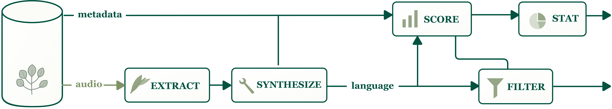

Abstract
Bioacoustics and ethology encompass a wide range of audio understanding tasks, many of which stand to benefit from recent advances in large audio-language models. However, progress in the field has so far been assessed on a narrow set of tasks, primarily centered on label-centric biological category recognition, such as species and call-type classification.
We introduce BEANS-Next, a benchmark grounded in a taxonomy of bioacoustic tasks spanning acoustic perception, biological category recognition, structural and temporal reasoning, and in-context learning. To support progress on this broader task space, we also introduce ROOTS, a large-scale training resource built from curated real-world bioacoustic data, previously underused behavioral and acoustic metadata, audio-derived information, and scalable synthetic generation where labeling is insufficient.
We show that existing models exhibit limited performance beyond the task families emphasized by existing evaluations, and that training on ROOTS yields substantial progress across all task groups in BEANS-Next.
Contributions
BEANS-Next
A benchmark for evaluating broad bioacoustic audio-language abilities required by ethology workflows.
ROOTS
A large-scale training dataset aligning structured metadata, text synthesis, and synthetic audio with the BEANS-Next taxonomy.
Open Resources
We release the benchmark, training data, synthetic subsets, and evaluation library to support future work.
BEANS-Next Taxonomy
BEANS-Next organizes bioacoustic audio-language evaluation into four tiers that reflect both scientific workflows and model capabilities.
Tier 1: Acoustic Perception
Fundamental frequency, duration, acoustic descriptors, and fine-grained perceptual reasoning.
Tier 2: Semantic Recognition
Species recognition, taxonomy prediction, call-type classification, and life-stage prediction.
Tier 3: Structural Reasoning
Counting, call timing, ordering, diarization, and relational analysis across vocal events.
Tier 4: In-Context Learning
Adaptation to novel taxa, user-defined sound classes, and multi-audio query-conditioned tasks.
Dataset Construction

Datasets and Code
ROOTS Training Dataset
Large-scale audio-language supervision for bioacoustics.
Hugging Face datasetQuick Start
The core library runs evaluation by sending requests to a model server that implements the BEANS-Next predictions_v1 HTTP contract. Below is a minimal end-to-end path using the Audio Flamingo Next reference launcher.
# 1) Install the BEANS-Next library (creates .venv/) uv sync # 2) Start an Audio Flamingo Next server (GPU required) cd examples/servers/af3 uv sync --group gpu PORT=19084 uv run ./serve.sh # 3) In another terminal, run a full benchmark pass cd ../../.. uv run beans-next run \ --predict-url http://127.0.0.1:19084/predict \ --suite beans_next_core \ --output-dir results/af3_beans_next_core
Tiers & label spaces (excluding captioning)
The table below summarizes the BEANS-Next tasks by tier and the expected ground-truth label space. Captioning / free-form description tasks are intentionally excluded here.
| Tier | Tasks (subset/task id) | Ground-truth label space |
|---|---|---|
| Tier 1 |
t1-description-mcq, t1-snr-mcq
t1-snr-regression, f0-mean-seen-taxa, f0-mean-heldout-taxa
|
MCQ: one of {a, b, c, d} (single letter).
Regression: numeric value (e.g. “39 dB”).
|
| Tier 2 |
t2-behavior
bird-presence, mammal-presence, amphibian-presence
alarm-call-presence, flight-call-presence
call-type-fixed-vocab
|
Binary presence: “Yes” / “No”.
Fixed vocabulary: one or more labels from a known set (e.g. “alarm call, flight call”).
|
| Tier 3 |
t3-species-count-oe
t3-vocalization-count-total-oe, t3-vocalization-count-total-mcq
t3-vocalization-count-per-species-oe
t3-vocalization-presence-binary, t3-vocalization-cooccurrence-binary
t3-vocalization-referring-mcq
t3-species-by-* (order / pitch / duration / frequency; OE + MCQ variants)
|
Binary: “Yes” / “No”.
Counts: numeric values (OE) or MCQ {A, B, C, D} depending on task.
Species selection: OE text label or MCQ {A, B, C, D} depending on task.
|
| Tier 4 |
gibbon-fewshot-detection-balanced, dcase-fewshot-detection-balanced
giant-otter-4way, crow-4way, zebra-4way, unseen-species-4way
|
4-way selection: one of {A, B, C, D}.
|
BEANS-Next benchmark examples
Audio placeholders are omitted or compacted; each row shows the split/task family, prompt, and reference output used for evaluation.
| Split / task family | Format | Prompt | Reference output |
|---|---|---|---|
| T1 vocalization description | MCQ | Which description best matches the vocalization? Options include a slow trill, low drone, sharp whistle, and staccato notes with nasal rise. | a series of rapid, repetitive, staccato notes followed by a nasal, rising inflection |
| T1 vocalization description | MCQ | Which description best matches the sound? Options include impulsive bursts, a melodic whistle, sharp staccato notes, and a low nasal moan. | A series of dense, impulsive bursts followed by a quiet, rapid trill and punctuated by loud clicks |
| T1 acoustic caption | Caption | Describe the acoustic character of this vocalization, including its frequency range. | The vocalizations consist of high-pitched, whistling one-note sounds spanning roughly 2,500 to 7,000 Hz, as well as buzzing, nasal one-note sounds ranging from 2,000 to 18,000 Hz. |
| T1 acoustic caption | Caption | Describe the acoustic character of this vocalization, including its recording quality. | This vocalization consists of a series of rapid rattles that increase in frequency, concluding with a single prolonged rattle. The sound is difficult to hear over background noise but becomes more audible towards the end of the recording. |
| T2 behavior | MCQ | Which acoustic behavior is the Flame-crested Manakin performing? Options: wing snap, no vocalization/silent, song. | Wing snap |
| T2 behavior | MCQ | Which vocalizations can be heard from the blue duck? Options: rapid drumming, continuous song, male whistle followed by female growl. | A male whistle followed by a female growl |
| T2 semantic caption | Caption | What can you hear in this recording? | A pair of Bronze-winged Ducks produces distinct vocalizations. The female emits quacking calls, while the male provides accompanying wheezy whistles. |
| T2 semantic caption | Caption | Describe the vocalization in this recording. | A Scarlet-and-white Tanager pair performs a duet, consisting of a single note from the male and a fine rattle from the female. Faint background vocalizations from other species are also audible. |
| T2 semantic caption | Caption | What can be heard in this recording? | Multiple Tawny Owls engage in a complex vocal interaction consisting of compound hooting and “ku-wick” calls. The calls include high-pitched, harsh hooting from a female responding to at least three males. |
| T3 structural caption | Caption | Describe the pattern of vocalizations in this recording. | The recording features a sequence of low-frequency calls from Streptopelia decaocto, which appear at the beginning, middle, and end of the clip. These calls are interspersed with higher-pitched vocalizations from Sturnus unicolor and Luscinia megarhynchos. |
| T3 highest pitch | MCQ | Which species produces the highest-pitched vocalization? Options: Charadrius hiaticula, Numenius arquata, Motacilla alba, Erithacus rubecula. | Motacilla alba |
| T3 longest vocalization | MCQ | Which species produces the longest vocalization? Options: Poecile atricapillus, Pipilo erythrophthalmus, Cardinalis cardinalis, Geothlypis trichas. | Cardinalis cardinalis |
| T3 co-occurrence | Binary | Are there any moments where both Vireo olivaceus and Setophaga ruticilla are calling simultaneously? | Yes |
| T3 species listing | Open-ended | How many different species are vocalizing, and what are they? Give scientific names. | 4: Corvus brachyrhynchos, Pipilo erythrophthalmus, Seiurus aurocapilla, Setophaga virens |
| T3 per-species counting | Open-ended | How many calls from each species can you hear? Give scientific names. | Pipilo erythrophthalmus: 6; Cardinalis cardinalis: 5; Geothlypis trichas: 4; Polioptila caerulea: 2 |
| T3 ordered summary | Open-ended | Describe each species in order of appearance, with call counts and frequency ranges. | Corvus brachyrhynchos: 3 calls, 920–2130 Hz; Seiurus aurocapilla: 2 calls, 2730–9550 Hz; Regulus calendula: 2 calls, 1430–8030 Hz; Poecile atricapillus: 6 calls, 2850–8830 Hz. |
| T4 gibbon few-shot detection | Multi-audio | Given three support sounds A–C, which are present in the query recording, if any? | Multiple pulse gibbon call |
| T4 giant otter call matching | Multi-audio | Given four call-type audio exemplars A–D, which call type best matches the query recording? | Begging Scream |
| T4 held-out species matching | Multi-audio | Given four species audio exemplars A–D, which species best matches the query recording? | Minervarya agricola |
Citation
@article{beansnext2026,
title={BEANS-Next and ROOTS: Toward Generalist Bioacoustic Audio-Language Models},
author={Anonymous Authors},
journal={NeurIPS},
year={2026}
}